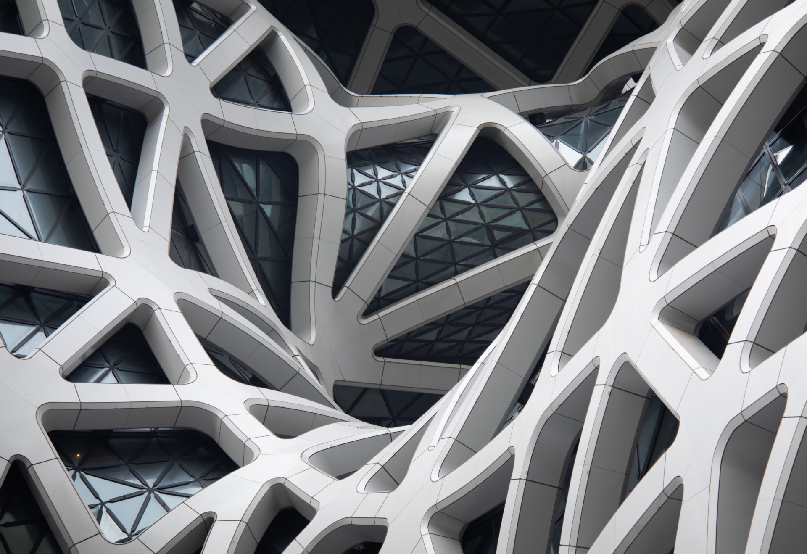
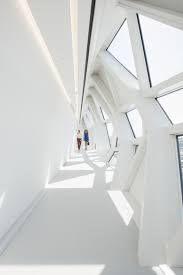

L'Hôtel Morpheus à Macao, Chine, est une prouesse architecturale exceptionnelle conçue par Zaha Hadid Architects.

Extérieur de l’Hôtel Morpheus à Macao, Chine
Inauguré en 2018, cet édifice iconique repousse les limites de l'ingénierie et du design. Les formes organiques et les
courbes audacieuses de la structure créent une esthétique futuriste unique, évoquant une structure sculpturale en
constante évolution.
Croquis Guangzhou Opera House à Guangzhou, Chine par Zaha HADID
En explorant la Guangzhou Opera House, les visiteurs sont transportés dans un univers où
l'architecture devient une
œuvre d'art vivante, témoignant du génie créatif de Zaha Hadid.

Extérieur de l’Hôtel Morpheus à Macao, Chine
L'Hôtel Morpheus s'intègre harmonieusement dans le skyline de Macao, ajoutant une dimension avant-gardiste à son paysage
urbain.


Intérieur de l’Hôtel Morpheus à Macao, Chine
En explorant cet édifice extraordinaire, les visiteurs sont immergés dans l'univers visionnaire de Zaha Hadid, où
l'architecture devient une expérience sensorielle et esthétique inoubliable.

Croquis de l’Hôtel Morpheus à Macao, Chine par Zaha HADID